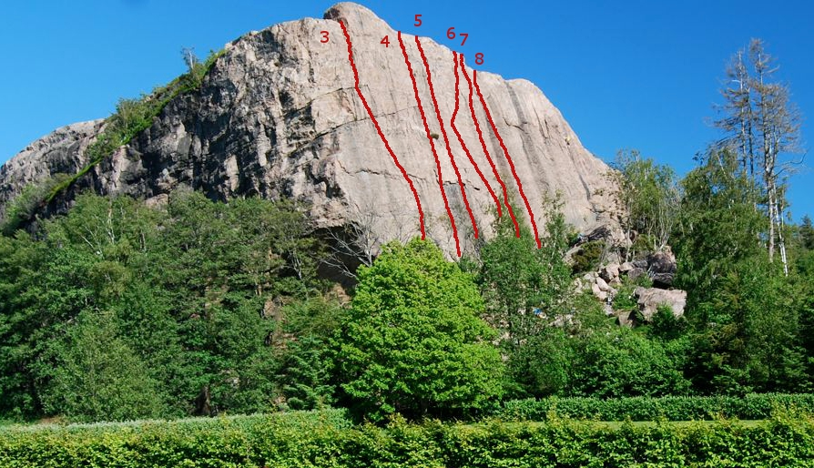
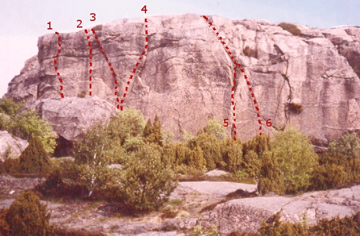

Brappersberget (Lyse kyrka)
Lat: 58.322652524354375
Long: 11.466636657714843
Introduktion
Kallades förr Lyse Kyrka, efter den vackra kyrkan intill. Populärt kursberg, och det är inte att undra på. Fina långa lätta leder, lätt att topprepa från den stora platån ovanför, vindskydd att luncha i, och inte långt att gå från bilen.
Used to be called Lyse Kyrka, named after the beautiful church close to the crag. This cliff holds relatively easy routes, good toprope possibilities and easy access with just a short walk from the car.
Karaktär
Kompakt, hög, sydvänd klippa, inte riktigt vertikal. Både väggklättring och sprickor. En hel del lättare turer mellan 3 och 5+. Även ett och annat lite tuffare.
Compact, tall, southfacing and slabby cliff. Both face and crack-climbing. Mostly easier routes ranging from grade 3 to 5+ even though some harder challenges can be found.
Vägbeskrivning
<googlemap version="0.9" lat="58.326574" lon="11.4711" zoom="10">
58.322427, 11.467152, Brappersberget
</googlemap>
Parkera vid kyrkan.
Access
Alternativ närförare:
Västväggen
Den västra sidan av berget som har skugga på dagtid.
-
- The Book of the Dead
- 6-
- Börjar ca 50 meter till vänster om Amerikanskt fyrverkeri. Följer ett tydligt "undercling-bälte" som går snett åt höger till en hylla där man gör stand. Fortsätt sedan rakt upp i ett dieder till toppen. Riktigt fin.
-
- Amerikanskt fyrverkeri
- 6+
- Fingerspricka som börjar i ett litet överhängande dieder, ca 15 meter in på västväggen.
-
- Gengångaren
- 7/7+
- Startar i överhänget nära bergets hörn. Följ bultarna.
Sydväggen
En fin vägg med många relativt lätta och välsäkrade leder i övre femma-registret.
Foto visar huvudväggen sedd från kyrkogården.

- 1
- Etikens altare
- 6-
- Starta upp i diedern tv om Sacre Coeur, följ Y-sprickan till vänster och håll sedan närmast kanten
- 2
- Sacre Couer
- 6-
- Startar i den v:a sprickan längst ut till vänster på väggen. Följ sprickan och sedan åt höger där leden förenas med St Pauls
- 3
- St Pauls
- 5+
- Högra sprickan till toppen.
- 4
- Du och jag, Katarina
- 5+
- Väggklättring mellan St Pauls och Kyrkråttan
- 5
- Skit i etiken, knulla liken
- 5+
- Sparsamt säkrad
- 6
- Kyrkråttan
- 4+
- Den stora spricklinjen th om St Pauls. Firningsankare.
- 7
- Hircus alarum
- 5+
- Väggklättring tv om Big Ben. En BB i början, därefter rakt upp
- 8
- Big Ben
- 5
- Den tydliga sprickan mitt på väggen. Extremt bra säkringar. Toppankare.
- 9
- Requiem
- 5
- Osäkrad klättring leder till en spricka ett par m under överlappningen. Säkra där. Klättra överlappningen via ett tydligt flak. Seriös!
- 10
- Ringaren
- 5-
- Sprickan 5m th om Requim. Följ sprickan och sedan rakt upp över mothänget. Bra säkringar.
- 11
- Altar orgie
- 4+
- Välsäkrad spricka till toppen som börjar i ett svart parti.
- 12
- Bjällran
- 3+
- Sprickan till höger om Altar orgie.
Lilla väggen
Den mindre klippväggen nära Brappersberget.

- 1
- Dim-up
- 6-
- Fin väggklättring på klippans vänstra del, 1bb.
- 2
- Stay up
- 6-
- Mellan Dim up och Godzilla. 2bb. Mycket fin.
- 3
- Godzilla
- 6+
- Tungt hangel i sprickan åt vänster
- 4
- Det smidiga kassaskåpet
- 6+
- Följ sprickan till hyllan (bult). Sedan väggklättring.
- 5
- Vogue
- 5
- Ett riss och en dieder mitt på väggen, Firningsbult ovanför.
- 6
- Den mumifierade räven
- 6-
- Fina, tunna riss ett par meter th om Vogue.
category:Topprep
category:trad
category:saknar_leder
category:saknar_skiss
Kategori:Bohuslän
Copyright (C) Permission is granted to copy, distribute and/or modify this document under the terms of the GNU Free Documentation License, Version 1.3